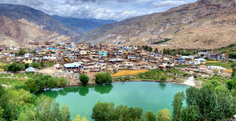

Kinnaur is one of twelve administrative districts in the Indian state of Himachal Pradesh, India. The district is divided into three administrative areas – Pooh, Kalpa, and Nichar(Bhabanagar)– and has five tehsils (counties). The administrative headquarters of Kinnaur district is at Reckong Peo. From here Kinnaur Kailash, considered to be the abode of Lord Shiva, can be seen. As of 2011, it is the second least populous district of Himachal Pradesh (out of 12 districts), after Lahaul and Spiti, in spite of that nine vital languages are spoken in the district. Kinnaur, is about 235 km (146 mi) from the state capital, Shimla, located in the northeast corner of Himachal Pradesh bordering Tibet to the east. It has three high mountains ranges, namely, Zanskar and Himalayas that enclose valleys of Sutlej, Spiti, Baspa and their tributaries. The slopes are covered with thick wood, orchards, fields and picturesque hamlets. At the peak of Kinnaur Kailash mountain is a famous natural rock Shivling (Shiva lingam).
Reckong Peo, or Peo is also known as the Land of the Gods for the amazing natural beauty it possesses, for it is believed that this is the place where the Gods will certainly dwell at. The headquarters of Kinnaur district, Peo is a hoard in the middle of the Himalayas, a serene town in the center of the great Himalayas. The apple orchards, along with the stately deodars and the fresh scent of pine trees make this place a stronge one to resist. With a breath-taking view of the Kailash Parvat and the Shivling, this spot is a hard one to miss.
Reckong Peo, or Peo is also known as the Land of the Gods for the amazing natural beauty it possesses, for it is believed that this is the place where the Gods will certainly dwell at. This spot is an amazing showcase of the splendor which the Himalayas are capable of presenting. The headquarters of Kinnaur district, Peo is a hoard in the middle of the Himalayas, a serene town in the center of the great Himalayas. It is well-known mostly for its apple orchards. These apple orchards, along with the stately deodars and the fresh scent of pine trees make this place a stronge one to resist. Now largely urbanized, Reckong Peo was hardly ever known till a few years back, and it is still counted as a place people visit very rarely as tourists.
Nako is a village full of eye capturing surroundings is the largest village situated in Kinnaur district of the Himachal Pradesh. Mainly this village is a good destination place for nature lover and trekkers. While travelling to Malling Nullah, Nako village is on the way. It is located at the East end of the Kinnaur district and is about 3600m high
Nako village in Himachal pradesh, also known as Land of the Fairy tales, is situated in Kinnaur district. The village is fully surrounded by the greeny of the nature. It is located at the east end of the kinnaur district and is about 3600m high. Very rare species are found there.It lies in the region touching the tibetan border.While travelling to Mallingh Nullah, Nako village comes on the way The village has very sight seeing things like lake, buddhist temples,Rakham etc. Near the lake one can find the footprint of the saint Padmasambhava. It is believed that the saint would have meditated there for many years. The nako village share a mixed culture of spiti and kinnaur. The village is small in size so it is a very favourite destination for the trekking lovers. The nako village also constitute of 4 buddhist temples.
Mathi is the Goddess of local people of Kinnaur. There are three temples in the same complex among which the oldest one is believed to be constructed by a resident of Garhwal around five hundred years ago. The temple houses an ark which is made of walnut wood and is covered with clothes and a tuft of yak tail. Two poles are inserted into this ark to carry it with.
According to the legend, Mathi, the wife of Lord Badrinath once started her journey from Brindavan and via Mathura and Badrinath she reached Tibet. Later she came to Garhwal and via Sirmour she reached Sarhan in Bushahr. Her ultimate destination was Barua Khad. While going beyond Barua Khad, she found the land was divided into seven parts. Narenas, her nephew was the deity of Shuang Village. So she appointed him as the guard of the village. Afterwards she moved towards Chasu Village. Narenas were the deity of Chasu Village as well. So she appointed them in Chasu as well. Later she visited Kamru Fort where Badri Nath was protecting the throne of Bushahr. In this process the goddess protected all seven regions of this valley and at last she reached Chhitkul and settled down in Mathi Temple. After her arrival on Chhitkul, the village started prospering. People were growing more and more food and cattle were getting sufficient grass to graze.